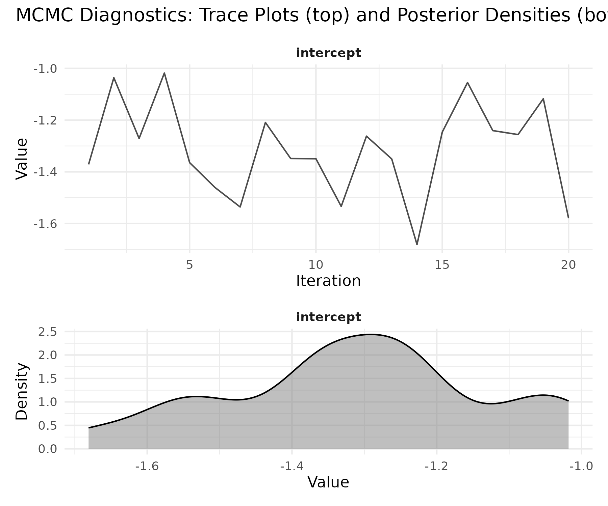
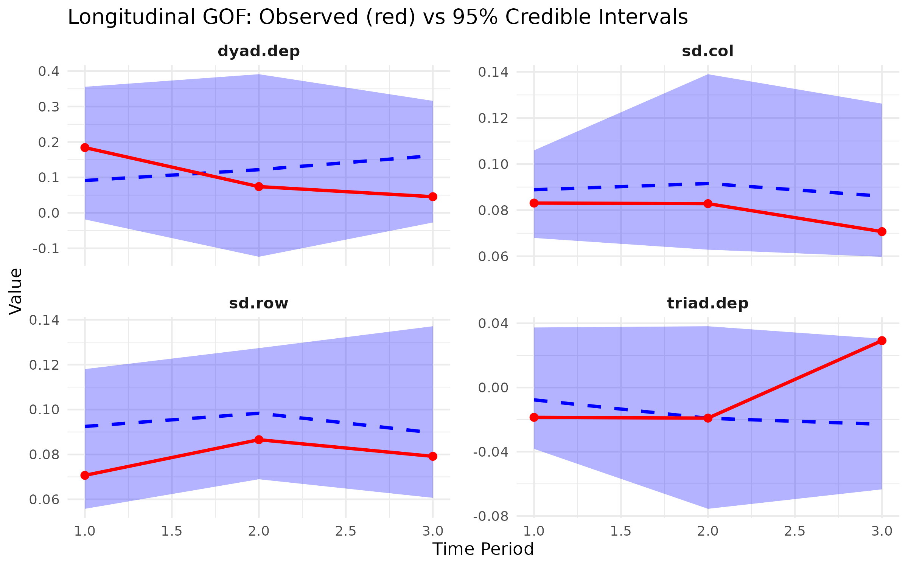
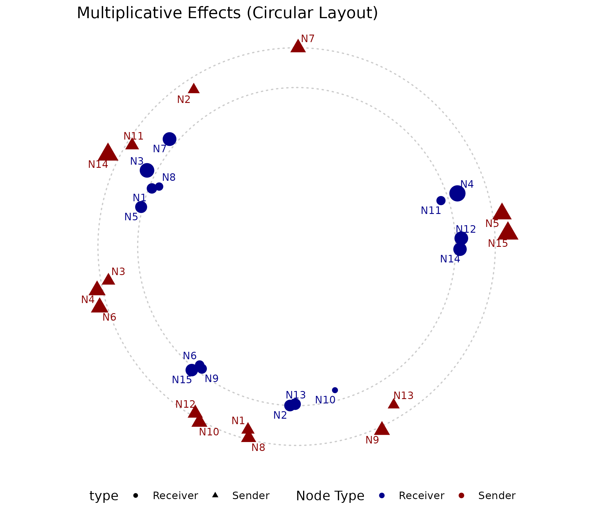
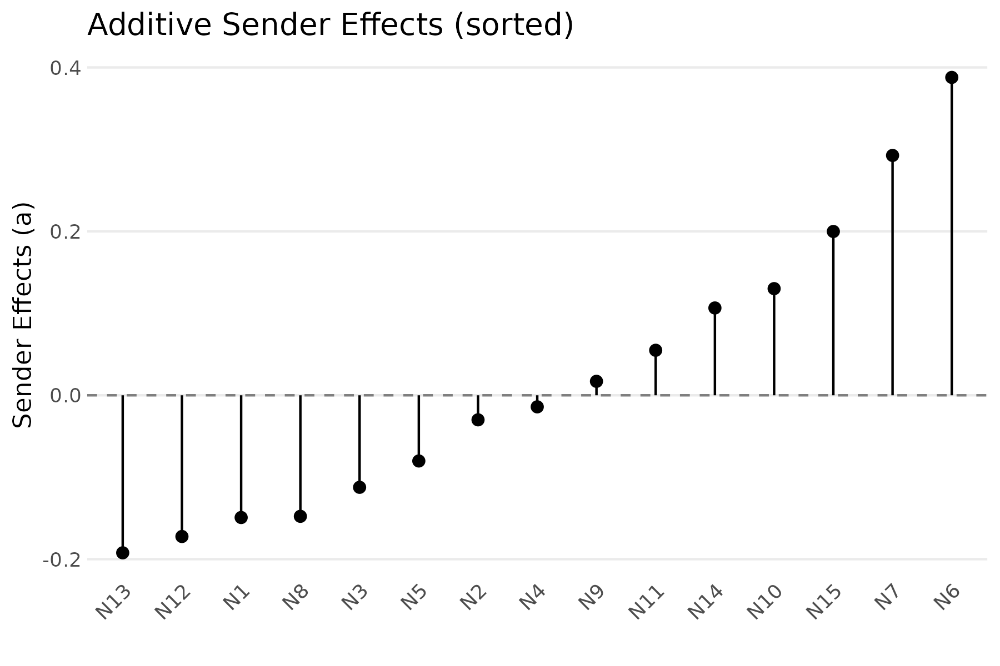

Getting Started with lame
Cassy Dorff, Shahryar Minhas, and Tosin Salau
2026-03-16
Source:vignettes/lame.Rmd
lame.RmdWhat Is lame?
The lame package fits Longitudinal
Additive and Multiplicative
Effects models to network data. If you have a network
(who trades with whom, who is friends with whom, who sanctions whom)
observed at one or more time points, lame lets you estimate
covariate effects while properly accounting for the dependencies that
make network data special.
The core idea: every actor has a tendency to send ties (), receive ties (), and a latent position (, ) that captures who connects with whom. Covariates shift the baseline probability of ties. And all of this can optionally evolve over time.
A 5-Minute Example
Let’s fit a model to a small longitudinal binary network in under 20 lines of code.
library(lame)
set.seed(6886)
# Simulate 3 time periods of a 15-node directed network
n <- 15; T_periods <- 3
Y_list <- lapply(1:T_periods, function(t) {
Y <- matrix(rbinom(n * n, 1, 0.15), n, n)
diag(Y) <- NA
rownames(Y) <- colnames(Y) <- paste0("N", 1:n)
Y
})
# Fit a longitudinal AME model
fit <- lame(
Y = Y_list,
R = 2, # 2D latent space
family = "binary", # probit for 0/1 networks
burn = 100, # burn-in (use 1000+ for real work)
nscan = 500, # post-burn-in samples (use 5000+)
odens = 25, # thinning
verbose = FALSE,
plot = FALSE
)
summary(fit)
#>
#> === Longitudinal AME Model Summary ===
#>
#> Call:
#> NULL
#>
#> Time periods: 3
#> Family: binary
#> Mode: unipartite
#>
#> Regression coefficients:
#> ------------------------
#> Estimate StdError z_value p_value CI_lower CI_upper
#> intercept -1.314 0.183 -7.199 0 -1.672 -0.956 ***
#> ---
#> Signif. codes: 0 '***' 0.001 '**' 0.01 '*' 0.05 '.' 0.1 ' ' 1
#>
#> Variance components:
#> -------------------
#> Estimate StdError
#> va 0.117 0.050
#> cab 0.001 0.041
#> vb 0.099 0.033
#> rho 0.313 0.183
#> ve 1.000 0.000
#> (va = sender, cab = sender-receiver covariance, vb = receiver,
#> rho = dyadic correlation, ve = residual variance)That’s it. You now have posterior estimates for regression coefficients, variance components, and latent positions pooled across all time periods.
What Can You Do with a Fitted Model?
lame objects work with all the standard R methods you’d
expect:
# Regression coefficients (posterior means)
coef(fit)
#> intercept
#> -1.31421
# 95% credible intervals
confint(fit)
#> 2.5% 97.5%
#> intercept -1.632783 -1.026529
# Predicted probabilities for every dyad at every time point
Y_hat <- predict(fit, type = "response")
cat("Predicted probability range:",
round(range(unlist(Y_hat), na.rm = TRUE), 3), "\n")
#> Predicted probability range: 0.014 0.625
# Residuals
resid_list <- residuals(fit)
cat("Residual SD:", round(sd(unlist(resid_list), na.rm = TRUE), 3), "\n")
#> Residual SD: 0.35Checking Your Model
Two essential diagnostics:
1. Did the MCMC converge? The trace plots should look like fuzzy caterpillars, not random walks with trends.
trace_plot(fit, params = "beta")
2. Does the model fit the data? The GOF plots compare observed network statistics to what the model predicts. Observed values should fall within the simulated distributions.
gof_plot(fit)
Visualizing Network Structure
The latent space shows which actors play similar roles in the network:
uv_plot(fit)
And the additive effects show who’s unusually active or popular:
ab_plot(fit, effect = "sender")
Cross-Sectional Models
If you have a single network (not a time series), use
ame() instead of lame():
fit_cs <- ame(
Y = Y_list[[1]], # just one time period
R = 2,
family = "binary",
burn = 100,
nscan = 500,
odens = 25,
verbose = FALSE
)
coef(fit_cs)
#> intercept
#> -1.21051The output and methods are the same. The difference is that
lame() pools information across time periods, giving you
more precise estimates when the structure is stable.
Dynamic Effects
When you believe the network structure is changing over time (alliances shifting, friendships evolving), you can let the latent positions and additive effects drift via AR(1) processes:
fit_dyn <- lame(
Y = Y_list,
R = 2,
dynamic_ab = TRUE, # time-varying sociality/popularity
dynamic_uv = TRUE, # time-varying latent positions
family = "binary",
burn = 100,
nscan = 500,
odens = 25,
verbose = FALSE,
plot = FALSE
)
summary(fit_dyn)
#>
#> === Longitudinal AME Model Summary ===
#>
#> Call:
#> NULL
#>
#> Time periods: 3
#> Family: binary
#> Mode: unipartite
#> Dynamic latent positions: enabled (rho_uv = 0.322 )
#> Dynamic additive effects: enabled (rho_ab = 0.294 )
#>
#> Regression coefficients:
#> ------------------------
#> Estimate StdError z_value p_value CI_lower CI_upper
#> intercept -1.199 0.158 -7.572 0 -1.509 -0.889 ***
#> ---
#> Signif. codes: 0 '***' 0.001 '**' 0.01 '*' 0.05 '.' 0.1 ' ' 1
#>
#> Variance components:
#> -------------------
#> Estimate StdError
#> va 0.114 0.058
#> cab 0.042 0.050
#> vb 0.123 0.051
#> rho 0.378 0.120
#> ve 1.000 0.000
#> (va = sender, cab = sender-receiver covariance, vb = receiver,
#> rho = dyadic correlation, ve = residual variance)The model estimates how persistent the latent positions are (): values near 1 mean slow evolution, values near 0 mean rapid change. See the dynamic effects vignette for a deeper dive.
Bipartite Networks
For two-mode networks (students and courses, countries and treaties),
pass a rectangular matrix and set mode = "bipartite":
nA <- 10; nB <- 8
Y_bip <- lapply(1:3, function(t) {
Y <- matrix(rbinom(nA * nB, 1, 0.2), nA, nB)
rownames(Y) <- paste0("R", 1:nA)
colnames(Y) <- paste0("C", 1:nB)
Y
})
fit_bip <- lame(
Y = Y_bip,
mode = "bipartite",
R = 2,
family = "binary",
burn = 100, nscan = 500, odens = 25,
verbose = FALSE, plot = FALSE
)
summary(fit_bip)
#>
#> === Longitudinal AME Model Summary ===
#>
#> Call:
#> NULL
#>
#> Time periods: 3
#> Family: binary
#> Mode: bipartite
#>
#> Regression coefficients:
#> ------------------------
#> Estimate StdError z_value p_value CI_lower CI_upper
#> intercept -0.895 0.438 -2.045 0.041 -1.753 -0.037 *
#> ---
#> Signif. codes: 0 '***' 0.001 '**' 0.01 '*' 0.05 '.' 0.1 ' ' 1
#>
#> Variance components:
#> -------------------
#> Estimate StdError
#> va 0.589 0.224
#> cab 0.000 0.000
#> vb 0.770 0.322
#> rho 0.000 0.000
#> ve 1.000 0.000
#> (va = sender, cab = sender-receiver covariance, vb = receiver,
#> rho = dyadic correlation, ve = residual variance)See the bipartite vignette for a full walkthrough.
Supported Data Types
| Family | Data | Example |
|---|---|---|
"normal" |
Continuous | Trade volumes, survey ratings |
"binary" |
0/1 | Friendships, alliances, sanctions |
"ordinal" |
Ordered categories | Conflict intensity (none/threat/action) |
"poisson" |
Counts | Number of co-sponsored bills |
"tobit" |
Non-negative continuous | Trade with zeros |
"cbin" |
Censored binary | Friendships with nomination limits |
"frn" |
Fixed rank nomination | “Name your top 5 friends” |
"rrl" |
Row-ranked likelihood | Ranked preferences |
Where to Go Next
| I want to… | Read this |
|---|---|
| Understand the full workflow with real data | lame overview |
| Learn about cross-sectional models in depth | Your first AME model |
| Model two-mode networks | Bipartite networks |
| Let the network structure evolve over time | Dynamic effects |